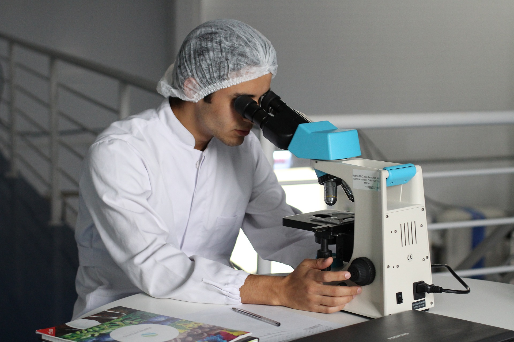

- 미래의 전문 기술 학습으로
- 삶을 개척하고 사회에 기여하는 인재 교육
- 미래인재 터전인 강서공업고등학교 홈페이지에 방문해주셔서 감사합니다.
- 본교는 1994년 개교한 이래 '정직','근면','창조'의 교훈을 가지고 있습니다.
- 본교의 학과는 '친환경건축과','친환경에너지화학과','U-정보통신과','VR콘텐츠디자인과'로 특화되어있습니다.
- 이 홈페이지는 강서공업고등학교를 홍보하기 위해 제작되었습니다.
- 학부모,졸업생,지역 주민을 비롯하여 본교를 사랑하는 분들을 위해 제작되었습니다.
- 강서공업등학교장 이주암
U-정보통신과
|

|

|
친환경건축과
|
VR콘텐츠디자인과
|

|
|  |
친환경에너지화학과
|
Copyrightⓒ2019 By 김준영. All right reserved.